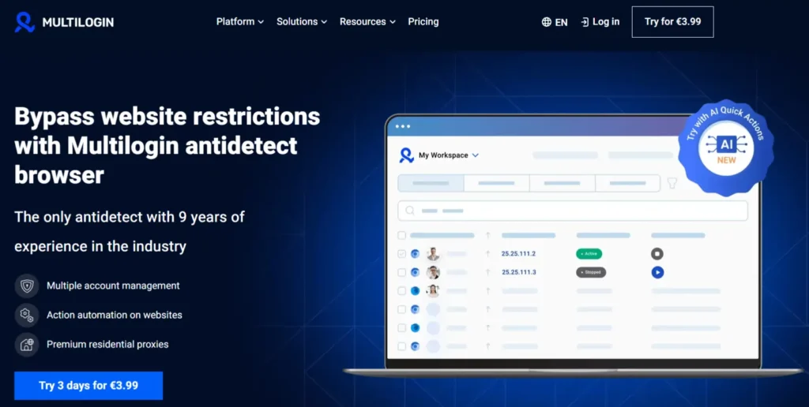
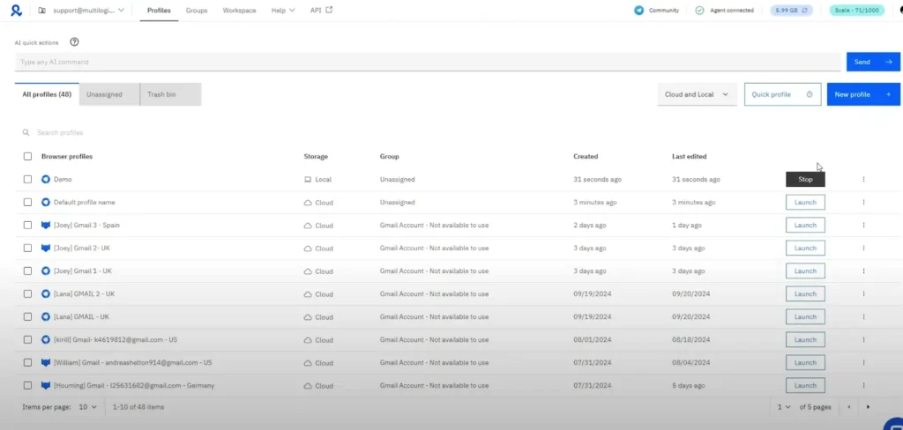

How to Use the Multilogin Coupon Code AFF5025
A simple step-by-step guide showing where the coupon fits into the buying process and how to compare plans before checkout.
These guides support the main money pages by answering beginner and mid-intent questions around Multilogin setup, coupon usage, and practical workflow planning.

A simple step-by-step guide showing where the coupon fits into the buying process and how to compare plans before checkout.
A practical guide explaining which real-world workflows benefit most from Multilogin and when cheaper tools may still be enough.
A basic onboarding tutorial for new users who want a clean start with profiles, proxies, naming structure, and team readiness.
The archive includes practical buying guides, coupon help, onboarding tutorials, and use-case explainers designed to support the main review, pricing, and offers pages.
Read the coupon guide if you are close to checkout, the setup guide if you are new, and the use cases guide if you are still deciding whether Multilogin fits your workflow.
Yes. The archive is designed as a supporting content hub, so the guides link back into the homepage, pricing, review, alternatives, and offers pages.
